wx Basics¶
Concept¶
wxPython is a Wrapper around the wxWidgets GUI library, which is written in C++.
- You may want to visit these pages for more information:
- The wxPython home page: https://wxpython.org/
- The wxPython API documentation: https://docs.wxpython.org/
- An overview including a Hello World application example: https://wxpython.org/pages/overview/
- A more comprehensive Getting Started guide: https://wiki.wxpython.org/Getting%20Started
- The wxWidgets home page: https://www.wxwidgets.org/
The wxGlade documentation is intended to be readable without previous wx knowledge. It will teach you how to create windows, handle events and how to integrate with your ‘business logic’ code. Sooner or later you will have to look into the wx documentation, though.
If you are new to wx/Python, make sure that you work through this documentation at least up to and including section “Create and Use Source Code”.
Also please note that the wxPython demo is probably most important resource for exploring the available controls! The demo has examples and example code for most widgets, including the more complicated and powerful ones like the grid control.
If you don’t have the demo, have a look here: https://extras.wxpython.org/wxPython4/extras/
Go to the subdirectory matching your wxPython version and download the demo archive.
Then unpack the archive and run demo.py.
Sizers (Layout Managers)¶
- With wxWidgets / wxPython and similar toolkits, usually controls are not placed at pixel positions on their windows, but the layout of a window is managed by sizers.
- There are horizontal box sizers, vertical box sizers and grid sizers.
- The box sizers may have a label and a box around them. In that case they’re called static box sizers.
- There are also variants of the box sizers, called wrap sizers. These will wrap around if there’s not enough space for it’s children.
- Each sizer and contained sizer items can be fixed size or grow to fill the available space, e.g. when the window is resized.
- Typically in a main window or frame the sizer makes the contents fill the available space, while dialogs will be sized to the minimum required space.
Sizer Examples¶
Vertical BoxSizer
|
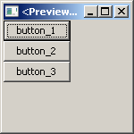 |
Horizontal BoxSizer
|
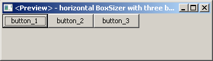 |
Allowing controls to grow and/or expand
|
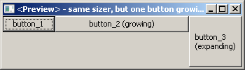 |
Alignment of controls
|
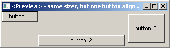 |
StaticBoxSizer
|
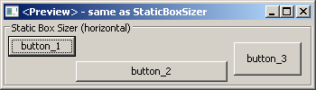 |
GridSizer
|
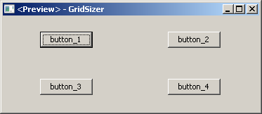 |
Expanding, growing and aligning in a grid cell
|
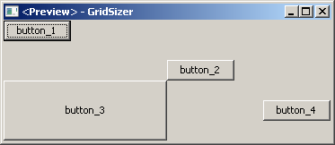 |
FlexGridSizer
|
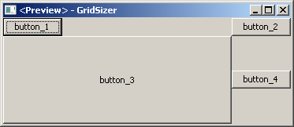 |
GridBagSizer
|
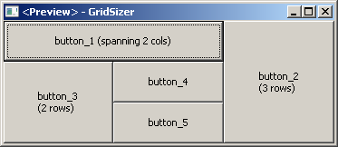 |
WrapSizer
|
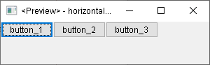 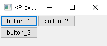 |
In wxGlade you can easily change the sizer type:
| 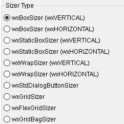 |
Example application: Calculator window¶
| 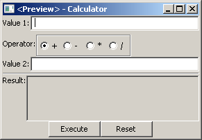 |
This window is managed by one vertical box sizer with six slots for the five rows, plus a horizontal line and five horizontal box sizers for the horizontally arranged controls they contain (i.e. label plus text control, label plus radio box or button plus button):
| The Design and Preview windows look like this, but without the colored frames for the horizontal and vertical sizers: 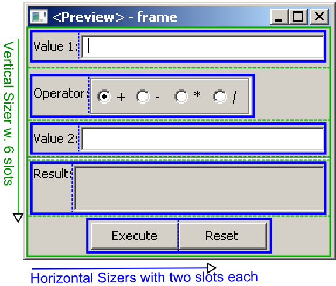 Each blue frame is a horizontal sizer with two slots each. The (invisible) borders between slots are indicated by dashed lines. The inputs for Value 1 and 2 are set to grow horizontally; the Result output is growing horizontally and EXPANDing vertically. |
In the Tree window, you can see the hierarchical structure: 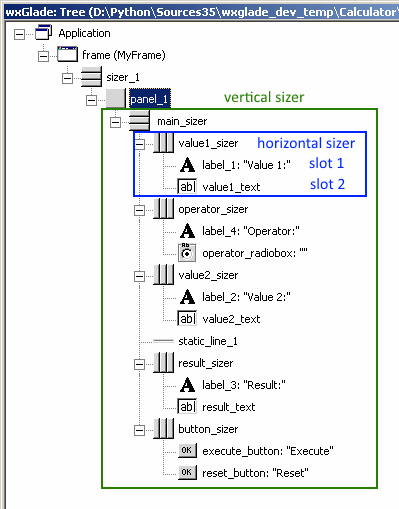 Note that horizontal and vertical sizers are visualized with different icons:   . . |
Later we’ll have a look at alternative structures which allow better alignment of the fields.
Note
- For your own projects, always use the simplest available sizers. Usually you will need mainly box sizers and maybe one or two FlexGridSizers.
- Use nested sizers to match the hierarchical / logical structure of your project. This will make it easy to re-arrange things to find the best user interface.
- Never ever try to use a Grid(Bag)Sizer as main sizer of a window trying to resemble pixel placement or Tkinter’s grid geometry manager. This is a mess to create and maintain. Actually, a GridBagSizer is rarely needed.

{kind=link}
{kind=link}
{kind=link}
{kind=link}
{kind=link}
{kind=link}
{kind=link}
{kind=link}
{kind=link}
{kind=link}
{kind=link}
{kind=link}
{kind=link}
{kind=link}
{kind=link}